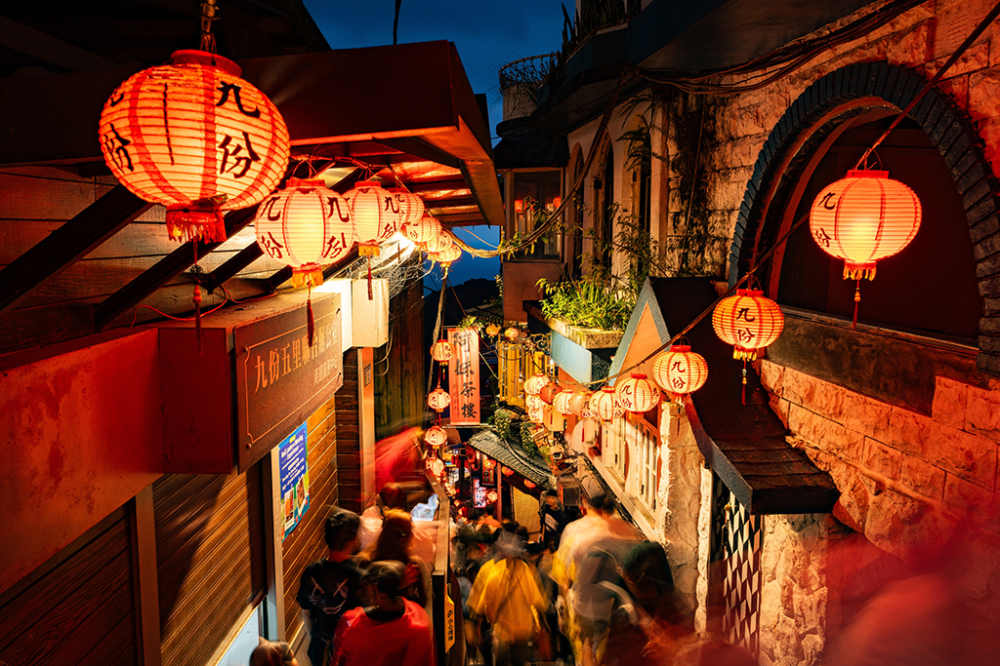
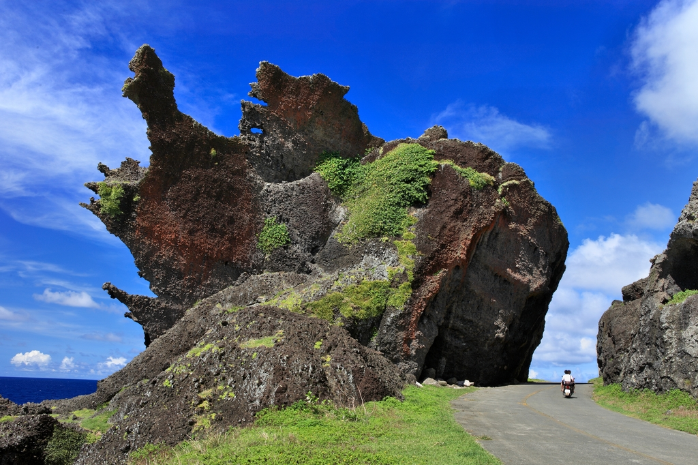
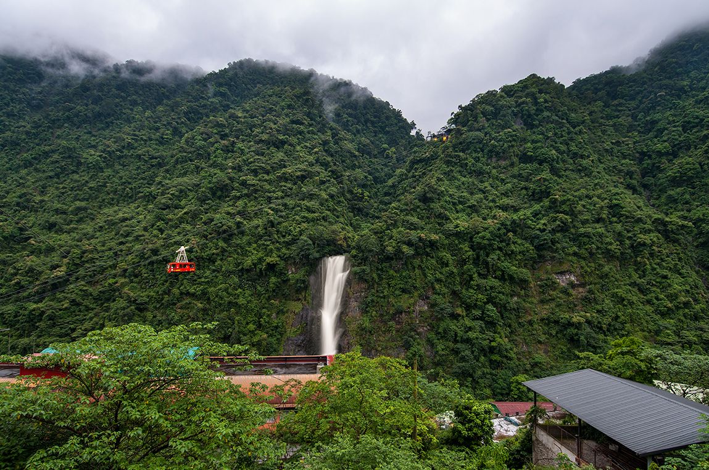

隨心所欲， 專屬你的台灣之旅
打破交通限制，tripool 包車服務帶您輕鬆探索九份的復古山城、蘭嶼的湛藍海景，與烏來的芬多精瀑布。專業司機、透明價格，讓旅行回歸最純粹的享受。

打破交通限制，tripool 包車服務帶您輕鬆探索九份的復古山城、蘭嶼的湛藍海景，與烏來的芬多精瀑布。專業司機、透明價格，讓旅行回歸最純粹的享受。
線上即時試算，絕無隱藏費用。依據您的行程客製化報價，長途包車比傳統計程車更划算。
嚴選無肇事紀錄的職業司機，提供 5 人座與 9 人座合法租賃車，確保旅途安全又舒適。
不需將毛小孩留在家！提供寵物友善車輛，讓您的愛寵也能參與每一次的家庭旅行。
行程有變數？不用擔心！派車前一日（特定條件下）提供優於業界的免費取消政策，退款有保障。
參考交通部觀光署資訊，我們精選了三個最具特色的台灣美景。包車出遊，點到點直達，省去轉車煩惱。
依據觀光署介紹，九份的房屋順應山勢，鱗次櫛比地蓋在一起。如今以其獨特的「山城」聚落景觀、蜿蜒的石階與紅燈籠街道聞名國際。漫步在豎崎路，感受復古與歷史交織的濃厚氛圍。

觀光署資料指出，蘭嶼保留了豐富的達悟族文化與原始自然生態。清澈見底的湛藍海洋、獨特的「拼板舟」文化，是旅客不可錯過的絕美島嶼。tripool 能為您安排前往台東富岡漁港的舒適接駁。

「烏來」擁有水質極佳的碳酸氫鈉泉，加上高聳壯麗的烏來瀑布、穿越山林的空中纜車。是北台灣享受森林浴、品嚐原住民美食的絕佳秘境。
